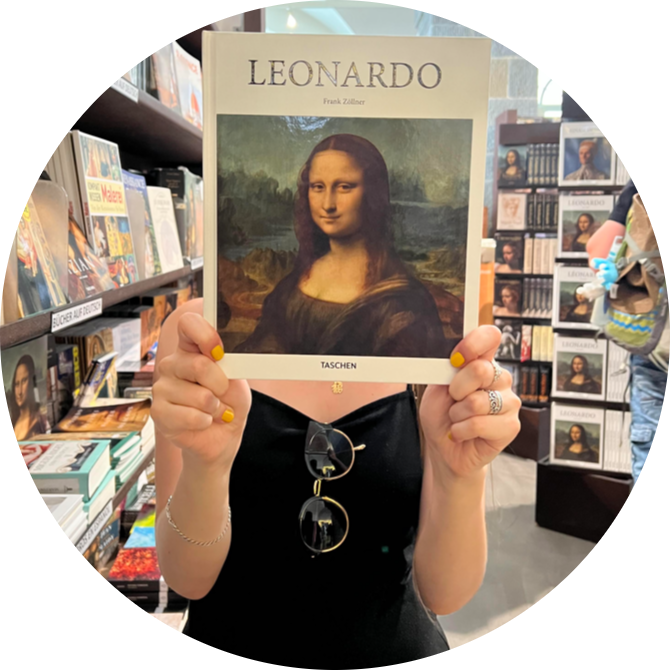

Je m’appelle Lisa et je dessine depuis que je sais tenir un crayon. Le dessin est une passion.
Je m’appelle Lisa et je dessine depuis que je sais tenir un crayon. Le dessin est une passion.J’adore créer une harmonie, colorée ou non, à partir d’une page blanche.
Si l'une de mes illustrations te fait de l’œil, n’hésite pas à l’adopter !
C’est un bonheur pour moi de savoir qu’un petit bout de mon art s’épanouit dans sa nouvelle maison !
 Mon pseudo : Tostaky ?
Tostaky n’est pas mon vrai nom. C’est le titre d’une chanson de Noir Désir que j’écoutais quand j’étais petite.
Mon pseudo : Tostaky ?
Tostaky n’est pas mon vrai nom. C’est le titre d’une chanson de Noir Désir que j’écoutais quand j’étais petite.
A l’origine, "Tostaky" est un cri de ralliement popularisé lors de la révolution mexicaine. Sa forme non-contractée "Todo esta aqui" veut dire "Tout est ici" en espagnol, dans le sens que "tout est présent, tout est possible". Avec cet héritage culturel, "Tostaky" devient un hymne à la vie. J’aime qu’une idée aussi puissante, universelle et profondément humaine soit évoquée en un seul mot.
De plus, je trouve l’esthétique et la sonorité de "Tostaky" aussi intéressantes que percutantes. Avec mon prénom, court et international, le rendu "Lisa Tostaky" est finalement bourré de sens, tout en étant harmonieux. En bref, je trouve ça stylé.
Par ailleurs, on m’a dit que Tostaky en grec "τοστάκι" signifie "pain grillé"... J’aime bien le pain grillé, donc c’est parfait.  Univers artistique Je n’arrive pas encore à décrire mon univers artistique : mettre des mots sur tous ces dessins qui me sont si intimes, c’est une tâche vraiment complexe.
Mes inspirations sont multiples et tellement différentes les unes des autres ! Je ne suis jamais touchée par la même chose et c’est à chaque fois une surprise le prochain dessin que je crée. Principaux médiums Crayons, stylo, peinture, aquarelle... J’aime toucher à tout et découvrir de nouvelles techniques.